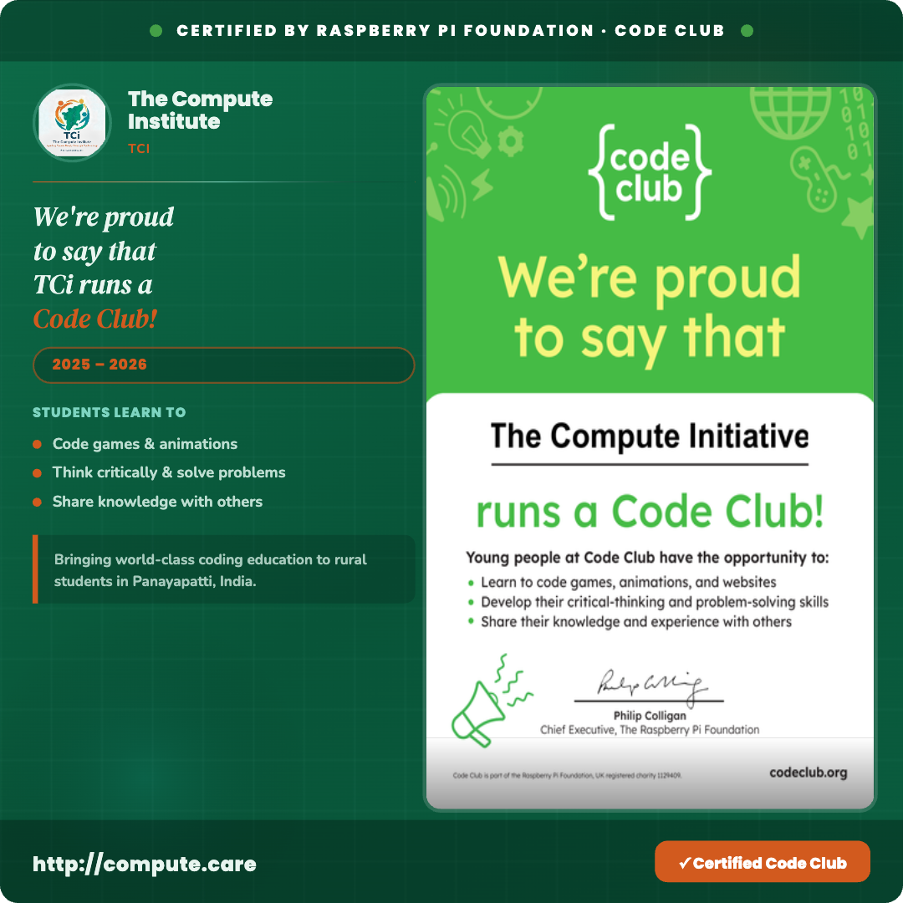

of Tamil Nadu's population lacks internet access
rural students has no smartphone
of rural households in India own a computer

The Compute Initiative (TCI) is a nonprofit bringing computer science education to under-resourced government-aided schools in rural Tamil Nadu, India. Founded by Anish and Anuj Subramanian on a simple belief — where you grow up shouldn't determine what you can achieve — TCI provides daily CS instruction and teacher training to students in grades 6–9.
We mobilize volunteers through grassroots recruiting, fundraise, and run every part of the operation ourselves: hardware, internet installation, and school logistics. We partner with SRM Arunachalam Higher Secondary School in Panayapatti, our newest school in Kuruvikondanpatti, and Thamarai Schools International, with support from Nagarathar Sangam of North America (NSNA) and our official Code Club (a Raspberry Pi Foundation program). Together with dedicated local teachers, we've built a daily curriculum now running in 2 schools, taught 700+ hours to 200 students, and donated 300 books.
Behind every statistic is a student seeing a computer for the first time, a teacher sharing a passion for coding, a parent watching their child's oppurtunities and capabilities expand. These are the people driving The Compute Initiative forward and with your support, there will be many more.
.jpg)


- Installed a new computer lab in 2026, bringing TCI's daily CS curriculum to a second government-aided school.
- Same 7-week hands-on curriculum as Panayapatti: computer fundamentals, internet & email basics, Word, Excel, presentations, and Python.
 Nagarathar Sangam North America (NSNA)
Nagarathar Sangam North America (NSNA)
- NSNA, a non-profit charitable organization, backs TCI as a recognized special project, helping fund computers, teacher salaries, and school logistics.
- Donations made through NSNA directly support our expansion to new schools.

Official Code Club- The Compute Initiative runs an officially registered Code Club, part of the Raspberry Pi Foundation's global network (codeclub.org).
- Anish and Anuj Subramanian are recognized Code Club Leader and Mentor, giving our students the chance to code games, animations, and websites.
- Vidhya P — Computer Instructor at Panayapatti, with 5 years of experience managing computer labs and teaching core computer subjects.
- Saranya — our newest teacher, a web designer and systems analyst bringing hands-on programming and systems experience to our growing classrooms.